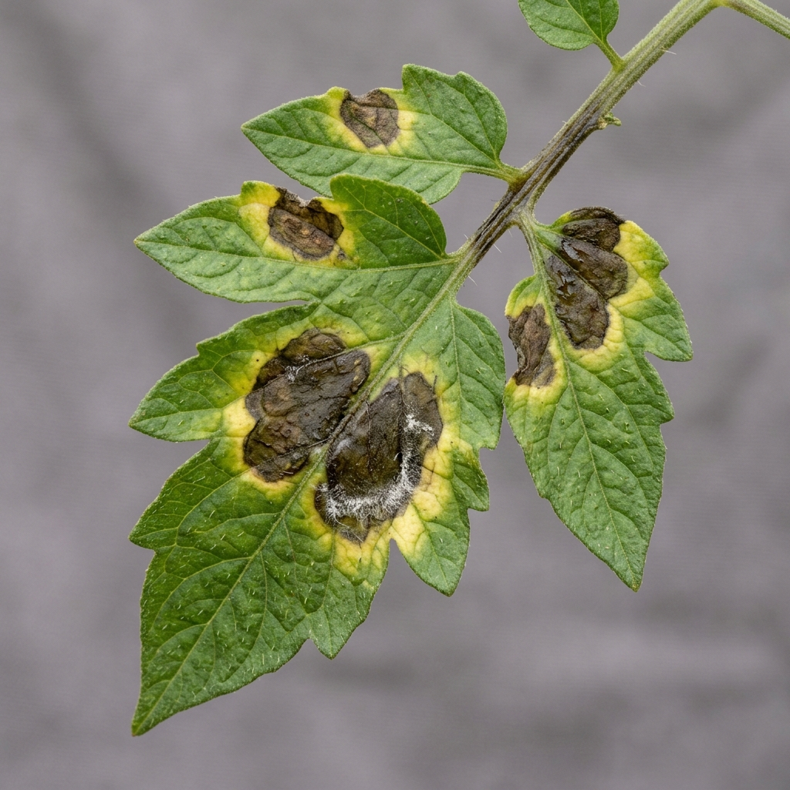

Select a preset diseased/healthy crop leaf to scan, or upload your own leaf image.

Tomato Blight Corn Rust
Corn Rust
 Apple Scab
Apple Scab
 Grape Rot
Grape Rot
 Healthy Leaf Control
Healthy Leaf Control
— OR —
Drag leaf image here
Supports PNG, JPG, or JPEG
The raw leaf photo is resized and normalized into a tensor representing RGB channels.
Eight 3x3 kernels extract primary edges, borders, color-intensity shifts, and lesion spot outlines.
Subsequent convolution layers extract structural features, combining edges into complex spot textures and chlorosis shapes.
Classification Result
No leaf loaded
Scientific classification